21 グラフ作成と画像処理

デジタルカメラをお持ちだったりスマホからソーシャルメディアサイトに写真をアップロードしたりしているなら、デジタル画像ファイルをしょっちゅう触っていることでしょう。Microsoft PaintやPaintbrushのような基本的なグラフィックソフトウェアや、Adobe Photoshopのようなさらに高機能なソフトウェアの使い方をご存知かもしれません。しかし、大量の画像を編集する必要があるとしたら、手動で行うのは時間がかかる退屈な作業です。
PillowというサードパーティのPythonパッケージで画像ファイルを処理できます。このパッケージには、クロップ、リサイズ、内容編集などの作業が簡単にできる関数があります。この章では、Pillowを使ってPythonで簡単に何千枚の画像でも自動的に編集できる方法を紹介します。
本章では、人気のある美しいグラフ作成ライブラリのMatplotlibも紹介します。Matplotlibは機能が豊富でカスタマイズできるオプションもたくさんあり、Matplotlibの解説に特化した本が多数出版されています。ここではMatplotlibによるグラフ作成の基礎を紹介します。
コンピュータ画像の基礎
画像を操作するには、Pillowで色と座標をどのように扱うかを理解する必要があります。付録Aの指示に従ってPillowの最新版をインストールしてください。
色とRGBA値
コンピュータプログラムでは、色をRGBA値で表現することが多いです。RGBA値とは、赤、緑、青、アルファ（透明度）を指定する数値の集まりです。数値はそれぞれ0（最小）から255（最大）の間の整数です。RGBA値は、コンピュータの画面で色を表示できる最小の点である個々のピクセルについて表されます。ピクセルのRGBにより表示する色調が正確に決まります。画面上の画像が背景画像や壁紙と重ね合わされていたら、そのピクセルでどの程度背景を見通せるかはアルファ値により決まります。
Pillowは4つの整数値のタプルでRGBA値を表します。例えば、赤色を(255, 0, 0, 255)で表します。この色は赤が最大量あり、緑と青はなく、アルファ値は最大値で完全に不透明です。Pillowでは緑を(0, 255, 0, 255)で表し、青を(0, 0, 255, 255)で表します。白はすべての色を混ぜ合わせた(255, 255, 255, 255)で、黒は色が全くない(0, 0, 0, 255)です。
アルファ値が0なら、透明で見えないので、RGB値が何であっても同じです。透明の赤は透明の黒と同じです。
PillowはHTMLと同じ標準色名を使います。表21-1では標準色名とその値をいくつか示しています。
名前 |
RGBA値 |
名前 |
RGBA値 |
|
|---|---|---|---|---|
White |
(255, 255, 255, 255) |
Red |
(255, 0, 0, 255) |
|
Green |
(0, 255, 0, 255) |
Blue |
(0, 0, 255, 255) |
|
Gray |
(128, 128, 128, 255) |
Yellow |
(255, 255, 0, 255) |
|
Black |
(0, 0, 0, 255) |
Purple |
(128, 0, 128, 255) |
PillowにはImageColor.getcolor()関数があるので、使いたい色のRGBA値を暗記する必要はありません。この関数は色名の文字列を第一引数に取り、'RGBA'という文字列を第二引数に取ります。RGBAのタプルが返されます。対話型シェルに以下の内容を入力してこの関数を試してみてください。
❶ >>> from PIL import ImageColor
❷ >>> ImageColor.getcolor('red', 'RGBA')
(255, 0, 0, 255)
❸ >>> ImageColor.getcolor('RED', 'RGBA')
(255, 0, 0, 255)
>>> ImageColor.getcolor('Black', 'RGBA')
(0, 0, 0, 255)
>>> ImageColor.getcolor('chocolate', 'RGBA')
(210, 105, 30, 255)
>>> ImageColor.getcolor('CornflowerBlue', 'RGBA')
(100, 149, 237, 255)
まず、PIL（本書でこれ以上説明しませんが、歴史的な理由によりPillowという名前ではありません）からImageColorモジュールをインポートしてください(❶)。ImageColor.getcolor()に渡す色名は大文字と小文字を区別しませんから、'red'(❷)も'RED'(❸)も同じRGBAタプルを返します。'chocolate'や'CornflowerBlue'のような聞き慣れない名前を渡すこともできます。
Pillowは'aliceblue'から'yellowgreen'まで非常に多くの色名をサポートしています。対話型シェルに以下を入力して色名を確認してみてください。
>>> from PIL import ImageColor
>>> list(ImageColor.colormap)
['aliceblue', 'antiquewhite', 'aqua', ... 'yellow', 'yellowgreen']
ImageColor.colormap辞書のキーにある100以上の色名をすべて見ることができます。
座標とボックスタプル
画像のピクセルは、水平方向の位置を指定するx座標と垂直方向の位置を指定するy座標で指し示されます。原点は画像の左上隅の(0, 0)です。1つ目のゼロはx座標を表し、原点のゼロから右方向へ増えていきます。2つ目のゼロはy座標を表し、原点のゼロから下方向へ増えていきます。ここで一つ注意を促します。y座標は下方向に増えていきます。数学の授業で習ったy座標と反対の方向です。図21-1でこの座標系を示しています。

図 21-1：大昔のデータストレージデバイスの28×27画像のx座標とy座標
Pillowの関数やメソッドは、ボックスタプルを引数に取ることが多いです。ボックスタプルとは、画像の長方形の領域を表す4つの整数の座標のタプルです。4つの整数は次の順番です。
左 長方形の左端を表すx座標
上 長方形の上端を表すy座標
右 長方形の右端の右隣のx座標（長方形の左端のx座標より大きくなければならない）
下 長方形の下端の下隣のy座標（長方形の上端のy座標より大きくなければならない）
長方形は左と上の座標は含みますが、右と下の座標は含まないことに注意してください。例えば、ボックスタプルの(3, 1, 9, 6)は、図21-2の黒い長方形のピクセルを表します。
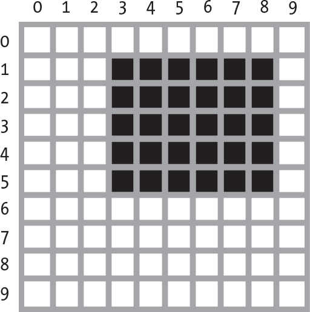
図 21-2：ボックスタプル(3, 1, 9, 6)によって表される領域
Pillowの色と座標について理解したので、Pillowを使って画像を操作してみましょう。
Pillowを使った画像の操作
Pillowの練習に図21-3で示したzophie.png画像を使います。https://
>>> from PIL import Image
>>> cat_im = Image.open('zophie.png')
>>> cat_im.show()
PillowからImageモジュールをインポートし、画像のファイル名を渡してImage.open()を呼び出します。ロードした画像をcat_imのような変数に格納できます。PillowのImageオブジェクトには、画像をウィンドウで開くshow()メソッドがあります。これはプログラムのデバッグの際にImageオブジェクトの画像を確認するのに便利です。

図 21-3：私のネコのZophie
画像ファイルが現在の作業ディレクトリになければ、os.chdir()関数を呼び出して作業ディレクトリを画像ファイルがあるフォルダに変更してください。
>>> import os
>>> os.chdir('C:\\folder_with_image_file')
Image.open()関数はImageオブジェクトデータ型の値を返します。Pillowではこれを使ってPythonの値として画像を表します。ファイル名の文字列をImage.open()関数に渡せばどのようなフォーマットの画像ファイルからでもImageオブジェクトをロードできます。save()メソッドでImageオブジェクトに加えた変更を画像ファイル（任意のフォーマット）に保存できます。回転、リサイズ、クロップ、描画その他の操作は、このImageオブジェクトのメソッドを呼び出して行います。
本章でのコード例を短くするために、PillowのImageモジュールをインポートしてZophieの画像をcat_imという名前の変数に格納していると想定します。Image.open()関数で開けるように、zophie.pngファイルが現在の作業ディレクトリにあることを確認してください。あるいは、この関数の引数の文字列に画像ファイルのフルパスを指定してください。
Imageデータ型の操作
Imageオブジェクトには、幅と高さ、ファイル名、画像フォーマット（例：JPEG、WebP、GIF、PNG）など、ロードした画像ファイルについての基本情報がわかる便利な属性がいくつかあります。対話型シェルで次のように入力してみてください。
>>> from PIL import Image
>>> cat_im = Image.open('zophie.png')
>>> cat_im.size
❶ (816, 1088)
❷ >>> width, height = cat_im.size
❸ >>> width
816
❹ >>> height
1088
>>> cat_im.filename
'zophie.png'
>>> cat_im.format
'PNG'
>>> cat_im.format_description
'Portable network graphics'
❺ >>> cat_im.save('zophie.jpg')
zophie.pngからImageオブジェクトを作成してcat_imに格納しています。そのオブジェクトのsize属性にはピクセル単位の画像の幅と高さのタプルが入っています(❶)。そのタプルの値をwidthとheightの変数に代入して(❷)、後で幅(❸)と高さ(❹)に個別にアクセスできるようにしています。filename属性は元のファイルの名前です。formatとformat_descriptionの属性は元ファイルの画像フォーマットについての説明です（format_descriptionのほうが詳細な説明です）。
最後に、'zophie.jpg'を渡してsave()メソッドを呼び出してzophie.jpgというファイル名の新しい画像をハードドライブに保存しています(❺)。Pillowはファイル拡張子が.jpgであることから自動的に画像をJPEG画像フォーマットを使って保存します。これでハードドライブ上の画像はzophie.pngとzophie.jpgの2つになりました。これらのファイルは同じ画像から作成されていますが、フォーマットが異なるので、同一ではありません。
PillowにはImage.new()という関数もあり、Image.open()と同じようにImageオブジェクトを返すのですが、空のImageオブジェクトを返します。Image.new()の引数は以下のとおりです。
- 'RGBA'という文字列を指定してカラーモードをRGBAに設定します（他のモードもありますが本書では扱いません）。
- 新しい画像の幅と高さの2つの整数をタプルとして指定します。
- 画像の初期背景色を4つのRGBA値のタプルで指定します。ImageColor.getcolor()関数の返り値をこの引数で使うことができます。あるいは、標準色名を文字列で渡すこともできます。
対話型シェルで次のように入力してみてください。
>>> from PIL import Image
❶ >>> im = Image.new('RGBA', (100, 200), 'purple')
>>> im.save('purpleImage.png')
❷ >>> im2 = Image.new('RGBA', (20, 20))
>>> im2.save('transparentImage.png')
幅が100ピクセルで高さが200ピクセルの背景色が紫の画像のImageオブジェクトを作成しています(❶)。この画像をpurpleImage.pngというファイルに保存しています。もう一度Image.new()を呼び出して、別のImageオブジェクトを作成します。今回は幅と高さに(20, 20)を渡し、背景色は指定しません(❷)。色の指定がなければ透明な黒(0, 0, 0, 0)がデフォルトになりますから、2つ目の画像は透明な背景です。この20×20の透明な正方形をtransparentImage.pngに保存します。
画像のクロップ
画像のクロップとは、画像内の長方形の範囲を選択して、その範囲の外側をすべて取り除くことです。Imageオブジェクトのcrop()メソッドはボックスタプルを取り、クロップされた画像を表すImageオブジェクトを返します。クロップはその場で起こるのではありません。つまり、元のImageオブジェクトはそのまま変更されず、crop()メソッドが新しいImageオブジェクトを返します。ボックスタプル（この場合はクロップする範囲）は左と上のピクセルを含みますが右と下のピクセルは含まないことに注意してください。
以下の式を対話型シェルに入力してみてください。
>>> from PIL import Image
>>> cat_im = Image.open('zophie.png')
>>> cropped_im = cat_im.crop((335, 345, 565, 560))
>>> cropped_im.save('cropped.png')
このコードはクロップした画像の新しいImageオブジェクトを作成し、cropped_imにそのオブジェクトを格納します。それから、cropped_imについてsave()を呼び出して、図21-4に示されるクロップした画像をcropped.pngという名前で保存します。
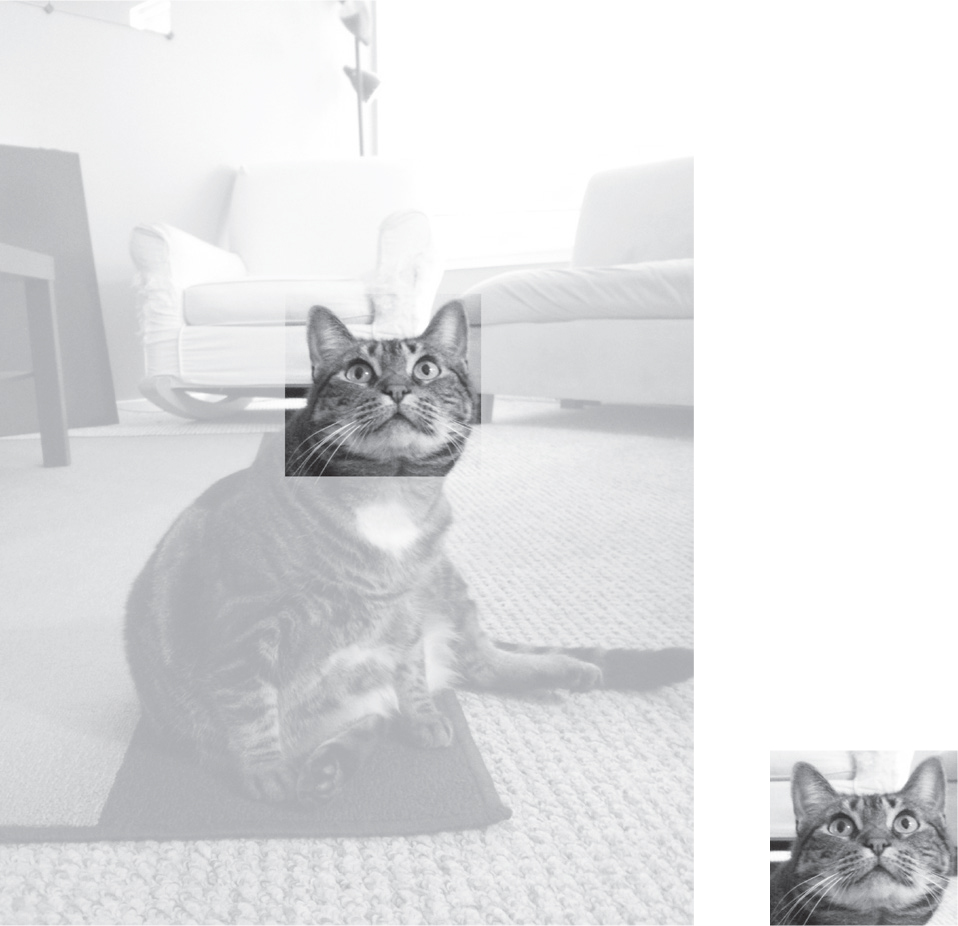
図 21-4：新しい画像は元の画像の選択範囲でクロップされている
クロップは元のファイルから新しいファイルを作成します。
画像を別の画像に貼り付ける
Imageオブジェクトについてcopy()メソッドを呼び出すと、同じ画像を含む新しいImageオブジェクトが返されます。画像に変更を加えたいのだけれども元の画像をそのまま残しておきたいときに使えます。対話型シェルで次のように入力してみてください。
>>> from PIL import Image
>>> cat_im = Image.open('zophie.png')
>>> cat_copy_im = cat_im.copy()
cat_imとcat_copy_imの変数には、同じ画像ではありますが2つの別々のImageオブジェクトが格納されています。cat_copy_imに格納したImageオブジェクトがありますから、これを好きなように変更して新しいファイル名で保存できます。cat_imは変更されないままです。
Imageオブジェクトについてpaste()メソッドを呼び出すと、その画像の上に別の画像を貼り付けます。シェルの例を続けてcat_copy_imに小さい画像を貼り付けてみましょう。
>>> face_im = cat_im.crop((335, 345, 565, 560))
>>> face_im.size
(230, 215)
>>> cat_copy_im.paste(face_im, (0, 0))
>>> cat_copy_im.paste(face_im, (400, 500))
>>> cat_copy_im.save('pasted.png')
zophie.pngの中でZophieの顔を含む長方形の領域を表すボックスタプルをcrop()に渡します。このメソッド呼び出しは、230×215でクロップした画像を表すImageオブジェクトを作成します。これをface_imに格納します。このface_imをcat_copy_imに貼り付けます。paste()メソッドは引数を2つ取ります。貼り付けるソースのImageオブジェクトと、ソースのImageオブジェクトをメインのImageオブジェクトに貼り付ける左上隅のx座標とy座標のタプルです。ここではcat_copy_imについてpaste()を2回呼び出し、face_imを2枚cat_copy_imに貼り付けています。最後に、変更を加えたcat_copy_imをpasted.pngに保存します。それを図21-5に示します。
注記
Pillowのcopy()メソッドとpaste()メソッドは、コンピュータのクリップボードを使いません。
paste()メソッドはその場でImageオブジェクトを変更します。貼り付け後の画像のImageオブジェクトを返すのではありません。paste()を呼び出したいのだけれども元の変更されていない画像も残しておきたければ、最初に画像をコピーして、コピーしたものについてpaste()を呼び出します。

図 21-5：顔を2枚貼り付けられたネコのZophie
図21-6に示すようにZophieの顔を画像全体に敷き詰めたいとしましょう。

図 21-6：paste()を入れ子のforループで使うとネコの顔を複製できる
forループを2回使えばこれを実現できます。対話型シェルで続けて以下のように入力してください。
>>> cat_im_width, cat_im_height = cat_im.size
>>> face_im_width, face_im_height = face_im.size
❶ >>> cat_copy_im = cat_im.copy()
❷ >>> for left in range(0, cat_im_width, face_im_width):
... ❸ for top in range(0, cat_im_height, face_im_height):
... print(left, top)
... cat_copy_im.paste(face_im, (left, top))
...
0 0
0 215
0 430
0 645
0 860
0 1075
230 0
230 215
--snip--
690 860
690 1075
>>> cat_copy_im.save('tiled.png')
元の画像の幅と高さをcat_im_widthとcat_im_heightに格納します。次に、画像のコピーを作成し、cat_copy_imに格納します(❶)。このコピーにループでface_imを貼り付けます。外側のforループの変数leftは0から始めてface_im_widthずつ増やしていきます(❷)。内側のforループの変数topは0から始めてface_im_heightずつ増やしていきます(❸)。この入れ子のforループは、図21-6に示したようにImageオブジェクトの上にface_im画像を貼り付ける格子のleftとtopの値を作り出します。入れ子のループの動きを確認するためにleftとtopを表示しています。貼り付けが完了すれば変更後のcat_copy_imをtiled.pngに保存します。
透明な画像を貼り付ける場合は、オプションの第三引数としてその画像を渡す必要があります。そうすればPillowに元の画像のどの部分に貼り付けるかを伝えられます。第三引数を指定しなければ、透明なピクセルの部分は貼り付け後に白いピクセルになってしまいます。これについては「プロジェクト16：ロゴの追加」で詳しく説明します。
画像のリサイズ
Imageオブジェクトについてresize()メソッドを呼び出すと、指定した幅と高さの新しいImageオブジェクトが返されます。このメソッドは、新しい画像の幅と高さの2つの整数値のタプルを引数に取ります。以下の式を対話型シェルに入力してみてください。
>>> from PIL import Image
>>> cat_im = Image.open('zophie.png')
❶ >>> width, height = cat_im.size
❷ >>> quarter_sized_im = cat_im.resize((int(width / 2), int(height / 2)))
>>> quarter_sized_im.save('quartersized.png')
❸ >>> svelte_im = cat_im.resize((width, height + 300))
>>> svelte_im.save('svelte.png')
cat_im.sizeタプルの2つの値を変数widthとheightに代入しています(❶)。以降のコードではcat_im.size[0]とcat_im.size[1]ではなくこれらの変数を使って読みやすくしています。
最初のresize()呼び出しでは新しい幅にint(width / 2)を、新しい高さにint(height / 2)を渡しています(❷)。よって、resize()が返す新しいImageオブジェクトは元の画像の幅と高さが半分になり、面積は4分の1になります。resize()メソッドはタプルの引数に整数値しか受け入れませんので、2で割った数をint()呼び出しで囲んでいます。
このリサイズは元の画像の縦横比率を維持していますが、縦横比率を変えるリサイズも可能です。変数svelte_imには、幅は変えずに高さを300ピクセル高くしてZophieを痩せて見えるようにしたImageオブジェクトを格納しています(❸)。
resize()メソッドはその場でImageオブジェクトを編集するのではなく、新しいImageオブジェクトを返すことに注意してください。
画像の回転と反転
rotate()メソッドを使えば画像を回転させられます。新しいImageオブジェクトが返されるので、元の画像は変更されません。このメソッドは、画像を反時計回りに回転させる度数を表す整数または浮動小数点数を1つ取ります。以下の式を対話型シェルに入力してみてください。
>>> from PIL import Image
>>> cat_im = Image.open('zophie.png')
>>> cat_im.rotate(90).save('rotated90.png')
>>> cat_im.rotate(180).save('rotated180.png')
>>> cat_im.rotate(270).save('rotated270.png')
rotate()が返すImageオブジェクトに直接save()をつなげられます。1つ目のrotate()とsave()は画像を反時計回りに90度回転させてrotated90.pngに保存します。2つ目は180度、3つ目は270度回転です。結果を図21-7に示します。
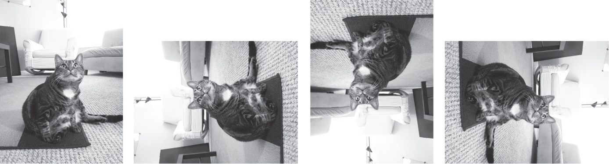
図 21-7：元画像（左）と反時計回りに90度、180度、270度回転させた画像
回転させた画像は元の画像と同じ高さと幅になります。Windowsでは、図21-8に示すように、回転により生じた隙間は黒い背景になります。macOSとLinuxでは、隙間が黒い背景ではなく透明なピクセルになります。
rotate()メソッドにはexpandというオプションのキーワード引数があります。それにTrueを指定すれば、画像の大きさが拡大して回転した新しい画像全体が収まるようになります。対話型シェルで次のように入力してみてください。
>>> cat_im.rotate(6).save('rotated6.png')
>>> cat_im.rotate(6, expand=True).save('rotated6_expanded.png')
1回目の呼び出しでは画像を6度回転させてrotated6.pngに保存しています（図21-8の左側の画像参照）。2回目の呼び出しでは画像を6度回転させて、expandにTrueを指定し、rotated6_expanded.pngに保存しています（図21-8の右側の画像参照）。
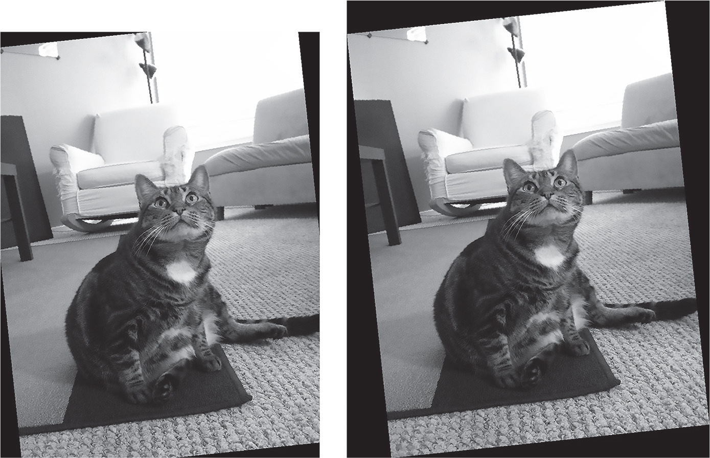
図 21-8： expand=Trueを指定せずに6度回転させた画像（左側）と、指定して6度回転させた画像（右側）
expand=Trueを指定して画像を90度、180度、270度回転させると、回転後の画像には黒または透明の背景が入ることはありません。
図21-9に示すように、transpose()メソッドで画像の鏡映反転もできます。

図 21-9：元の画像（左側）と水平鏡映反転（中央）と垂直鏡映反転（右側）
以下の式を対話型シェルに入力してみてください。
>>> cat_im.transpose(Image.FLIP_LEFT_RIGHT).save('horizontal_flip.png')
>>> cat_im.transpose(Image.FLIP_TOP_BOTTOM).save('vertical_flip.png')
rotate()と同じように、transpose()は新しいImageオブジェクトを作成します。Image.FLIP_LEFT_RIGHTを渡して水平鏡映反転させhorizontal_flip.pngに保存しています。Image.FLIP_TOP_BOTTOMを渡して垂直鏡映反転させvertical_flip.pngに保存しています。
ピクセルごとに変更する
getpixel()メソッドでピクセルごとの色を取得でき、putpixel()でその色を変更できます。これらのメソッドはピクセルのx座標とy座標を表すタプルを取ります。putpixel()メソッドは、4つの整数値のRGBAタプルか3つの整数のRGBタプルでそのピクセルの変更後の新しい色も取ります。以下の式を対話型シェルに入力してみてください。
>>> from PIL import Image
❶ >>> im = Image.new('RGBA', (100, 100))
❷ >>> im.getpixel((0, 0))
(0, 0, 0, 0)
❸ >>> for x in range(100):
... for y in range(50):
... ❹ im.putpixel((x, y), (210, 210, 210))
...
>>> from PIL import ImageColor
❺ >>> for x in range(100):
... for y in range(50, 100):
... ❻ im.putpixel((x, y), ImageColor.getcolor('darkgray', 'RGBA'))
...
>>> im.getpixel((0, 0))
(210, 210, 210, 255)
>>> im.getpixel((0, 50))
(169, 169, 169, 255)
>>> im.save('putPixel.png')
100×100の透明な正方形の新しい画像を作成します(❶)。透明な画像なので、この画像の座標についてgetpixel()を呼び出すと(0, 0, 0, 0)が返されます(❷)。色をつけるために、入れ子のforループでこの画像の上半分のピクセルを反復処理します(❸)。ライトグレーを表すRGBタプルをputpixel()に渡します(❹)。
画像の下半分をダークグレーにしたいけれどもそのRGBタプルがわからないとしましょう。putpixel()メソッドは'darkgray'のような標準色名は取りません。そのため、ImageColor.getcolor()でその色に対応するタプルを取得します(❻)。画像の下半分を反復処理します(❺)。putpixel()にImageColor.getcolor()の返り値を渡します。これで図21-10に示すような、上半分はライトグレーで下半分はダークグレーの画像ができました。指定したピクセルの色が期待通りであることをgetpixel()を呼び出して確認します。最後に、この画像をputPixel.pngに保存します。
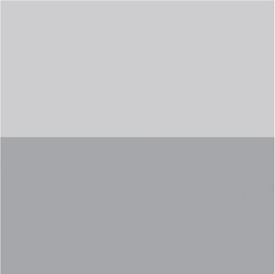
図 21-10：putPixel.png画像
ピクセルごとに描画するのはあまり便利ではありません。直線や曲線の図形を描画するなら、「描画」で説明するImageDraw関数を使います。
プロジェクト16：ロゴの追加
何千枚もの画像をリサイズして隅に小さなロゴの透かしを追加するという退屈な作業があるとします。この作業をPaintbrushやPaintのような基本的なグラフィックプログラムで行うとしたら、いつまで経っても終わらないでしょう。Photoshopのような高機能のグラフィックアプリケーションであればバッチ処理ができますが、このようなソフトウェアは数万円します。この作業を行うスクリプトを書きましょう。
図21-11のロゴを各画像の右下隅に追加したいです。背景が透明で白い輪郭の黒いネコのアイコンです。ロゴをご自身で用意しても構いませんし、本書のオンライン素材に入っているものを使っても構いません。
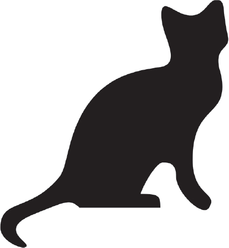
図 21-11：画像に追加するロゴ
このプログラムには以下の内容が必要です。
- ロゴ画像のロード
- 現在の作業ディレクトリのすべての.pngファイルと.jpgファイルを反復処理
- 画像が300ピクセルよりも大きいか判定
- 300ピクセルよりも大きければ、幅と高さの大きいほうを300ピクセルに切り詰め、比率を保ったまま小さくする
- 隅にロゴ画像を貼り付ける
- 変更後の画像を別のフォルダに保存する
コードには以下の内容が必要になります。
- catlogo.pngファイルをImageオブジェクトとして開く
- os.listdir('.')で返される文字列を反復処理する
- size属性で画像の幅と高さを取得する
- リサイズ後の画像の幅と高さを計算する
- resize()メソッドを呼び出して画像をリサイズする
- paste()メソッドを呼び出してロゴを右下隅に貼り付ける
- save()メソッドを呼び出して変更後の画像を元のファイル名で保存する
ステップ1：ロゴ画像を開く
新しいファイルエディタタブを開き、以下のコードをresizeAndAddLogo.pyという名前で保存してください。
# 画像を300x300の正方形に収まるようにリサイズして隅にロゴを入れる
import os
from PIL import Image
❶ SQUARE_FIT_SIZE = 300
❷ LOGO_FILENAME = 'catlogo.png'
❸ logo_im = Image.open(LOGO_FILENAME)
❹ logo_width, logo_height = logo_im.size
# TODO：現在の作業ディレクトリのすべてのファイルを反復処理
# TODO：リサイズが必要かどうかを判定
# TODO：リサイズする幅と高さを計算
# TODO：画像のリサイズ
# TODO：ロゴの追加
# TODO：変更保存
プログラムの冒頭で、定数SQUARE_FIT_SIZE(❶)とLOGO_FILENAME(❷)を設定することで、あとでプログラムを変更しやすくしています。ネコ以外のロゴ画像を追加したり、出力画像の長辺を300ピクセルから変更したりする場合に、コードを開いてこの定数部分だけを変更するだけですみます。これらの定数をコマンドライン引数から設定できるようにしてもよいでしょう。この定数を使わないとしたら、コード全体から300と'catlogo.png'を探し出して新しい値に置き換えなければなりません。
Image.open()メソッドはロゴのImageオブジェクトを返します(❸)。コードの読みやすさのために、ロゴの幅と高さを変数に代入しています(❹)。プログラムの残りの部分はTODOコメントで骨組みを示しています。
ステップ2：すべてのファイルを反復処理する
現在の作業ディレクトリにある.pngファイルと.jpgファイルをすべて見つけます。ロゴ画像自体にロゴ画像を追加したくないですから、LOGO_FILENAMEと同じファイル名の画像は飛ばします。以下のコードを追加します。
# 画像を300x300の正方形に収まるようにリサイズして隅にロゴを入れる
import os
from PIL import Image
--snip--
os.makedirs('withLogo', exist_ok=True)
# 現在の作業ディレクトリのすべてのファイルを反復処理
❶ for filename in os.listdir('.'):
❷ if not (filename.endswith('.png') or filename.endswith('.jpg')) \
or filename == LOGO_FILENAME:
❸ continue # 画像ではないファイルとロゴ画像自体は飛ばす
❹ im = Image.open(filename)
width, height = im.size
--snip--
まず、元の画像ファイルを上書きしないように、os.makedirs()を呼び出して変更後の画像を保存するwithLogoフォルダを作成します。exist_ok=Trueキーワード引数を指定しているので、withLogoがすでに存在していてもos.makedirs()で例外は発生しません。現在の作業ディレクトリにあるすべてのファイルを反復処理しますが(❶)、長いif文でファイル名が.pngまたは.jpgで終わるかをチェックしています(❷)。ファイル名が.pngまたは.jpgで終わらないか、あるいはロゴ画像自体であれば、ループはそのファイルを飛ばし、continueで次のファイルに進みます(❸)。filenameが'.png'または'.jpg'で終わりロゴ画像でなければ、そのファイルをImageオブジェクトとして開き(❹）、幅と高さを変数に格納します。
ステップ3：画像をリサイズする
このプログラムでは、幅または高さがSQUARE_FIT_SIZE（この例では300ピクセル）よりも大きい場合にのみ画像をリサイズします。よって、リサイズするコードは、変数widthとheightをチェックするif文の内側に書きます。以下のコードを追記してください。
# 画像を300x300の正方形に収まるようにリサイズして隅にロゴを入れる
import os
from PIL import Image
--snip--
# リサイズが必要かどうかを判定
if width > SQUARE_FIT_SIZE and height > SQUARE_FIT_SIZE:
# リサイズする幅と高さを計算
if width > height:
❶ height = int((SQUARE_FIT_SIZE / width) * height)
width = SQUARE_FIT_SIZE
else:
❷ width = int((SQUARE_FIT_SIZE / height) * width)
height = SQUARE_FIT_SIZE
# 画像のリサイズ
print(f'Resizing {filename}...')
❸ im = im.resize((width, height))
--snip--
画像をリサイズする場合は、横長なのか縦長なのかを判別しなければなりません。widthがheightよりも大きければ、（横長なので幅を300ピクセルにリサイズするとして）高さを幅と同じ比率で縮小する必要があります(❶)。この比率はSQUARE_FIT_SIZEの値を元の幅で割り算した値です。よって、新しいheightの値を元のheight値にこの比率をかけ算して設定します。割り算をすると値が浮動小数点数値になり、resize()は整数値を要求するため、忘れずにint()関数で整数に変換しなければなりません。最後に、新しいwidthの値にSQUARE_FIT_SIZEを設定します。
heightがwidth以上なら、else節で同じ計算を行いますが、変数のheightとwidthが逆になります(❷)。これらの変数に新しい値を設定したら、その値をresize()メソッドに渡して返されるImageオブジェクトを変数に格納します(❸)。
ステップ4：ロゴを追加して変更後の画像を保存する
画像をリサイズしてもしなくても、ロゴを右下隅に貼り付けます。ロゴをどの位置に貼り付けるかは画像とロゴの両方のサイズによって決まります。図21-12に貼り付け位置の計算方法を示します。ロゴを貼り付ける左端の座標は画像の幅からロゴの幅を引いて求め、上端の座標は画像の高さからロゴの高さを引いて求めます。
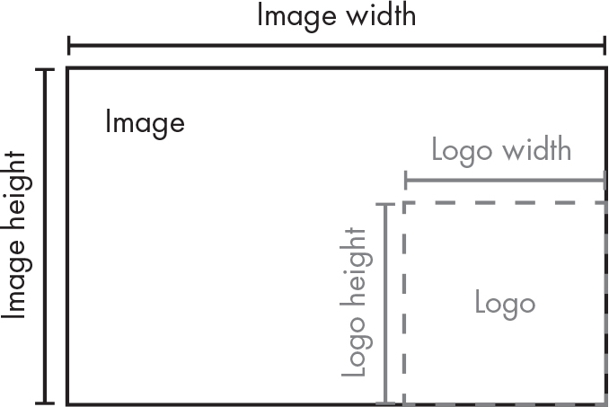
図 21-12：ロゴを貼り付ける左端と上端の座標は、画像の幅／高さからロゴの幅／高さを引いて求める
ロゴを画像に貼り付けてから、変更後のImageオブジェクトを保存します。以下のコードです。
# 画像を300x300の正方形に収まるようにリサイズして隅にロゴを入れる
import os
from PIL import Image
--snip--
# リサイズが必要かどうかを判定
--snip--
# ロゴの追加
❶ print(f'Adding logo to {filename}...')
❷ im.paste(logo_im, (width – logo_width, height – logo_height), logo_im)
# 変更保存
❸ im.save(os.path.join('withLogo', filename))
ロゴを追加する旨をユーザーに伝えるメッセージを表示し(❶)、logo_imをimの計算した座標に貼り付け(❷)、変更後の画像を元のファイル名でwithLogoディレクトリに保存します(❸)。zophie.pngその他の画像が現在の作業ディレクトリに存在する状況でこのプログラムを実行すると、次のように出力されます。
Resizing zophie.png...
Adding logo to zophie.png...
Resizing zophie_xmas_tree.png...
Adding logo to zophie_xmas_tree.png...
Resizing me_and_zophie.png...
Adding logo to me_and_zophie.png...
このプログラムによって、図21-13に示すように、zophie.pngが225×300ピクセルの画像に変換されました。
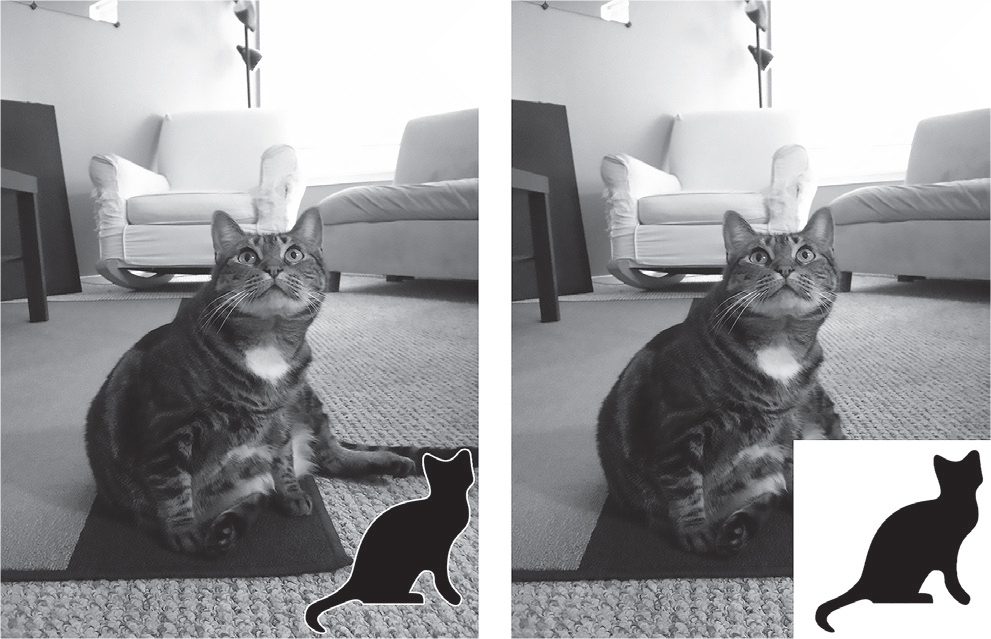
図 21-13：プログラムでzophie.pngをリサイズしてロゴを追加した画像（左側）。第三引数を指定しないとロゴの透明なピクセルは白になる（右側）。
第三引数にlogo_imを渡さなければpaste()メソッドが貼り付けるピクセルは透明になりません。このプログラムは数百の画像でも自動的にリサイズしてロゴを追加します。
似たようなプログラムのアイデア
バッチ処理で一括して画像を合成したりリサイズしたりできると便利です。以下のようなプログラムを作成できます。
- 画像にテキストやウェブサイトのURLを追加する
- 画像にタイムスタンプを追加する
- 画像をサイズに応じてフォルダに分類する
- 他人がコピーして利用するのを防止するために画像に透かしを入れる
描画
直線、長方形、円などの図形を描画するにはPillowのImageDrawモジュールを使います。対話型シェルで次のように入力してみてください。
>>> from PIL import Image, ImageDraw
>>> im = Image.new('RGBA', (200, 200), 'white')
>>> draw = ImageDraw.Draw(im)
ImageとImageDrawをインポートして、200×200の白い画像を作成してimに格納します。このImageオブジェクトをImageDraw.Draw()関数に渡してImageDrawオブジェクトを取得します。このオブジェクトには描画のためのメソッドがあります。この新しいオブジェクトを変数drawに格納して、以下の例で用います。
図形
以下のImageDrawメソッドでさまざまな図形を描画します。fillとoutlineの引数はオプションで、指定しなければデフォルトで白になります。
点
point(xy, fill)メソッドは個々のピクセルを描画します。xy引数は描画する点のリストを表します。このリストは、[(x, y), (x, y), ...]のようにx座標とy座標のタプルを含むか、[x1, y1, x2, y2, ...]のようにタプルではないx座標とy座標を含みます。fill引数でRGBAタプルか'red'のような文字を指定すると、点に色をつけられます。fill引数はオプションです。フォントサイズの単位ではなくピクセル単位で点を描画します。
直線
line(xy, fill, width)メソッドは直線を描画します。xy引数は[(x, y), (x, y), ...]のようなタプルのリストか、[x1, y1, x2, y2, ...]のような整数のリストです。各点を結ぶ直線が描画されます。オプションのfill引数で直線の色をRGBAタプルか色名で指定できます。オプションのwidth引数で直線の幅を指定できます。指定しなければデフォルトで1になります。
長方形
rectangle(xy, fill, outline, width)メソッドは長方形を描画します。xy引数は(left, top, right, bottom)という形のボックスタプルです。leftとtopの値は左上のx座標とy座標で、rightとbottomの値は右下の座標です。オプションのfill引数で長方形を塗りつぶす色を指定します。オプションのoutline引数で長方形の輪郭線の色を指定します。オプションのwidth引数は線の幅を表し、指定しなければデフォルトの1になります。
楕円
ellipse(xy, fill, outline, width)メソッドは楕円を描画します。幅と高さを同じにすれば円を描画します。xy引数は、楕円をぴったり中に含みこむ長方形を表す(left, top, right, bottom)のボックスタプルです。オプションのfill引数で楕円を塗りつぶす色を指定します。オプションのoutline引数で楕円の輪郭線の色を指定します。オプションのwidth引数で線の幅を指定し、指定しなければデフォルトの1になります。
多角形
polygon(xy, fill, outline, width)メソッドは任意の多角形を描画します。xy引数は[(x, y), (x, y), ...]のようなタプルのリストか、[x1, y1, x2, y2, ...]のような整数のリストで、多角形の辺を結ぶ点を表します。最後の座標は自動的に最初の座標と線で結ばれます。オプションのfill引数で多角形を塗りつぶす色を指定します。オプションのoutline引数で多角形の輪郭線の色を指定します。オプションのwidth引数で線の幅を指定し、指定しなければデフォルトの1になります。
描画例
以下の内容を対話型シェルに入力してこれらのメソッドの練習をしてみてください。
>>> from PIL import Image, ImageDraw
>>> im = Image.new('RGBA', (200, 200), 'white')
>>> draw = ImageDraw.Draw(im)
>>> draw.line([(0, 0), (199, 0), (199, 199), (0, 199), (0, 0)], fill='black') ❶
>>> draw.rectangle((20, 30, 60, 60), fill='blue') ❷
>>> draw.ellipse((120, 30, 160, 60), fill='red') ❸
>>> draw.polygon(((57, 87), (79, 62), (94, 85), (120, 90), (103, 113)), fill='brown') ❹
>>> for i in range(100, 200, 10): ❺
... draw.line([(i, 0), (200, i - 100)], fill='green')
>>> im.save('drawing.png')
200×200の白い画像のImageオブジェクトを作成してから、それをImageDraw.Draw()に渡してImageDrawオブジェクトを取得し、drawに格納しています。このdrawについて描画メソッドを呼び出します。画像の端に黒い線(❶)、左上が(20, 30)で右下が(60, 60)の青い長方形(❷)、(120, 30)から(160, 60)のボックスで定義される赤い楕円(❸)、5つの点からなる茶色の多角形(❹)、forループで緑の直線の模様(❺)をそれぞれ描画しています。これにより作成されるdrawing.pngファイルは図21-14のようになります（本書で色は再現されていません）。

図 21-14：drawing.png画像
ImageDrawオブジェクトについては他の描画メソッドも使えます。https://
テキスト
ImageDrawオブジェクトには画像にテキストを入れるtext()メソッドもあります。以下の4つの引数を取ります。
xy テキストボックスの左上を指定する2つの整数のタプル
text 書き込むテキスト文字列
fill テキストの文字色
font テキストの書体とサイズを設定するのに使うImageFontオブジェクト（オプション）
text()で画像にテキストを入れる前に、オプションのfont引数の詳細を説明します。この引数はImageFontオブジェクトであり、以下のように取得します。
>>> from PIL import ImageFontPillowのImageFontモジュールをインポートしたら、2つの引数を取るImageFont.truetype()関数を呼び出してフォントにアクセスできます。第一引数は、ハードドライブ上に存在する実際のフォントファイルであるフォントの書体ファイルの文字列です。書体ファイルは.ttfファイル拡張子で、WindowsならC:\Windows\Fonts、macOSなら/Library/Fontsと/System/Library/Fonts、Linuxなら/usr/share/fonts/truetypeに通常存在します。Pillowは自動的にこれらのディレクトリを探索するので、書体ファイルの文字列としてパスを渡す必要はありません。指定したフォントが見つからなければエラーを表示します。
ImageFont.truetype()の第二引数はフォントサイズをピクセルで表す整数です。Pillowはデフォルトで72ピクセルが1インチになるPNG画像を作成するので、1ピクセルは1ポイントと同じように見えます。以下の対話型シェルで練習してみましょう。
>>> from PIL import Image, ImageDraw, ImageFont
>>> import os
❶ >>> im = Image.new('RGBA', (200, 200), 'white')
❷ >>> draw = ImageDraw.Draw(im)
❸ >>> draw.text((20, 150), 'Hello', fill='purple')
❹ >>> arial_font = ImageFont.truetype('arial.ttf', 32)
❺ >>> draw.text((100, 150), 'Howdy', fill='gray', font=arial_font)
>>> im.save('text.png')
Image、ImageDraw、ImageFont、osをインポートしてから、200×200の新しい白い画像のImageオブジェクトを作成し(❶)、そのImageオブジェクトからImageDrawオブジェクトを作成します(❷)。text()を使ってHelloを紫色で(20, 150)に書き込みます(❸)。この呼び出しではオプションの第四引数を渡していないので、書体とサイズは調整されません。
次に、書体とサイズを設定するために、希望するフォントの.ttfファイルとフォントサイズの整数を渡してImageFont.truetype()を呼び出します(❹)。返されるFontオブジェクトを変数に格納し、その変数をtext()メソッドの最後のキーワード引数で渡します。このメソッド呼び出しにより、灰色で(100, 150)に32ピクセルのArialでHowdyと書き込みます(❺)。作成されるtext.pngファイルは図21-15のようになります。
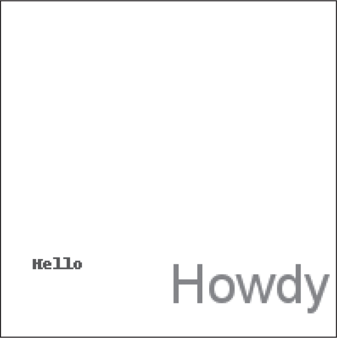
図 21-15：text.pngファイル画像
Pythonでコンピュータアートを作成することに興味がおありでしたら、Tristan BunnのLearn Python Visually (No Starch Press, 2021)か私の著書The Recursive Book of Recursion (No Starch Press, 2022)をご参照ください。
クリップボードへの画像のコピーアンドペースト
pyperclipモジュールを使えばテキスト文字列をクリップボードにコピーアンドペーストできるのと同じように、pyperclipimgモジュールを使えばPillowのImageオブジェクトをコピーアンドペーストできます。付録Aの指示に従ってpyperclipimgをインストールしてください。
pyperclipimg.copy()関数はPillowのImageオブジェクトを引数に取り、お使いのシステムのクリップボードにコピーします。それをMS Paintのような画像処理プログラムにペーストできます。pyperclipimg.paste()関数はクリップボードの画像をImageオブジェクトとして返します。現在の作業ディレクトリにzophie.pngがある状態で、以下の内容を対話型シェルで実行してみてください。
>>> from PIL import Image
>>> im = Image.open('zophie.png')
>>> import pyperclipimg
>>> pyperclipimg.copy(im) # 新しい画像をクリップボードにコピー
>>> # クリップボードの内容をクラフィックプログラムに貼り付け
>>> pasted_im = pyperclipimg.paste()
>>> pasted_im.show() # クリップボードから取得した画像の表示
このコードでは、まずzophie.png画像をImageオブジェクトとして開き、pyperclipimg.copy()に渡してクリップボードにコピーしています。グラフィックプログラムにその画像をペーストして動作確認してください。次に、グラフィックプログラムから新しい画像をコピーするか、ウェブブラウザで表示されている画像を右クリックしてコピーするかしてください。pyperclipimg.paste()を呼び出すとその画像のImageオブジェクトが返されるので、変数pasted_imに格納します。pasted_im.show()で動作確認できます。
pyperclipimgモジュールは、ユーザーとPythonプログラムとの間で画像を入出力するのに使えます。
Matplotlibでグラフを作成する
Pillowでグラフを描くことは不可能ではありませんが、作業量が多くなってしまいます。Matplotlibライブラリを利用すれば、出版物で使えるようなさまざまなグラフを作成できます。この章では、基本的な折れ線グラフと散布図と棒グラフと円グラフを作成します。Matplotlibはもっと複雑な三次元のグラフを作成することもできます。https://
折れ線グラフと散布図
x軸とy軸の二次元の折れ線グラフから始めましょう。測定値の時系列変化を示すのに折れ線グラフは適しています。Matplotlibでは、プロット（plot）とグラフ（graph）とチャート（chart）という言葉を同じような意味で使い、フィギュア（figure）という言葉でプロットやグラフやチャートを含むウィンドウを指します。以下の式を対話型シェルに入力してみてください。
>>> import matplotlib.pyplot as plt ❶
>>> x_values = [0, 1, 2, 3, 4, 5]
>>> y_values1 = [10, 13, 15, 18, 16, 20]
>>> y_values2 = [9, 11, 18, 16, 17, 19]
>>> plt.plot(x_values, y_values1) ❷
[<matplotlib.lines.Line2D object at 0x000002501D9A7D10>]
>>> plt.plot(x_values, y_values2)
[<matplotlib.lines.Line2D object at 0x00000250212AC6D0>]
>>> plt.savefig('linegraph.png') # 散布図を画像ファイルとして保存
>>> plt.show() # 散布図をウィンドウで開く
>>> plt.show() # 何も起こらない
関数を短い名前で呼び出せるように、matplotlib.pyplotをpltという名前でインポートします(❶)。plt.plot()関数を呼び出してデータを表す点を2次元の図でプロットします(❷)。x軸の数値をx_valuesに、y軸の数値をy_values1に、それぞれリストで格納します。x_valuesとy_values1のリストの最初の要素同士が結び付けられ、2番目の要素同士が結び付けられ、以下同様です。これらの値でplt.plot()を呼び出してから、x_valuesとy_values2でplt.plot()を呼び出して、グラフに2つ目の折れ線を追加します。
Matplotlibは自動的に線の色を選んで適当なサイズにしてくれます。plt.savefig('linegraph.png')を呼び出せばデフォルトのグラフをPNG画像として保存できます。
Matplotlibにはプレビュー機能があり、ウィンドウでグラフを確認できます。Pillowのshow()メソッドでImageオブジェクトをプレビューできるのと似ています。plt.show()を呼び出してウィンドウでグラフを開いてみてください。図21-16のように見えます。

図 21-16：plt.show()で表示される折れ線グラフ
plt.show()が作成するウィンドウでは、グラフを動かしたり拡大縮小したりできます。左下の家のアイコンをクリックするとビューがリセットされ、フロッピーディスクのアイコンをクリックするとグラフを画像ファイルとして保存できます。データをいじる際にplt.show()で視覚化できるのは便利です。plt.show()関数を呼び出すと、コード実行はユーザーがウィンドウを閉じるまでブロックされます。
plt.show()メソッドが作成したウィンドウを閉じると、グラフのデータがリセットされます。もう一度plt.show()を呼び出しても何も起こらないか空のウィンドウが表示されます。plt.plot()などのプロット関連の関数をもう一度呼び出さないとグラフは作成できません。グラフの画像を保存するには、plt.show()を呼び出す前にplt.savefig()を呼び出します。
同じデータで散布図を作成するなら、plt.scatter()関数にx軸とy軸の値を渡します。
>>> import matplotlib.pyplot as plt
>>> x_values = [0, 1, 2, 3, 4, 5]
>>> y_values1 = [10, 13, 15, 18, 16, 20]
>>> y_values2 = [9, 11, 18, 16, 17, 19]
>>> plt.scatter(x_values, y_values1)
<matplotlib.collections.PathCollection object at 0x00000250212CBAD0>
>>> plt.scatter(x_values, y_values2)
<matplotlib.collections.PathCollection object at 0x000002502132DC10>
>>> plt.savefig('scatterplot.png')
>>> plt.show()
plt.show()を呼び出すと、図21-17のような散布図が表示されます。呼び出す関数以外は折れ線グラフと全く同じです。

図 21-17：plt.show()で表示される散布図
この散布図を図21-16の折れ線グラフと比較すると、同じデータをプロットしていることがわかります。
棒グラフと円グラフ
Matplotlibを使って基本的な棒グラフを作成してみましょう。棒グラフは同種のデータをカテゴリーごとに比較するのに適しています。折れ線グラフとは異なり、カテゴリーの順序は重要ではありませんが、アルファベット順に並べることが多いです。以下の式を対話型シェルに入力してみてください。
>>> import matplotlib.pyplot as plt
>>> categories = ['Cats', 'Dogs', 'Mice', 'Moose']
>>> values = [100, 200, 300, 400]
>>> plt.bar(categories, values)
<BarContainer object of 4 artists>
>>> plt.savefig('bargraph.png')
>>> plt.show()
このコードを実行すると図21-18に示されるような棒グラフが作成されます。plt.bar()の第一引数にx軸のカテゴリーのリストを渡し、第二引数に各カテゴリの値を渡します。
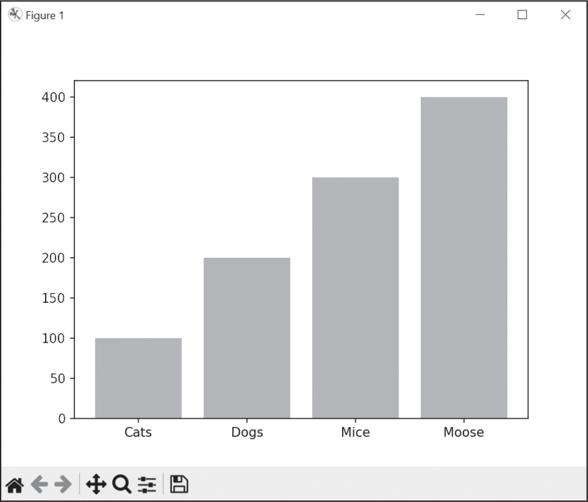
図 21-18：plt.show()で表示される棒グラフ
plt.show()ウィンドウを閉じるとグラフのデータがリセットされることに注意してください。
plt.pie()関数を呼び出すと円グラフを作成できます。円グラフには、カテゴリーと値ではなく、ラベルとスライスがあります。以下の式を対話型シェルに入力してみてください。
>>> import matplotlib.pyplot as plt
>>> slices = [100, 200, 300, 400] # 各スライスの大きさ
>>> labels = ['Cats', 'Dogs', 'Mice', 'Moose'] # 各スライスの名前
>>> plt.pie(slices, labels=labels, autopct='%.1f%%')
([<matplotlib.patches.Wedge object at 0x00000218F32BA950>,
--snip--
>>> plt.savefig('piechart.png')
>>> plt.show()
円グラフのplt.show()を呼び出すと、図21-19のようなウィンドウが表示されます。plt.pie()関数は、スライスの大きさとラベルを取ります。
autopct引数では、各スライスのパーセンテージラベルの精度を指定します。引数は指示子文字列です。'%.1f%%'と指定すると数値は小数第一位まで表示されます。 関数呼び出し時にこのキーワード引数を指定しなければ、円グラフにパーセンテージは表示されません。
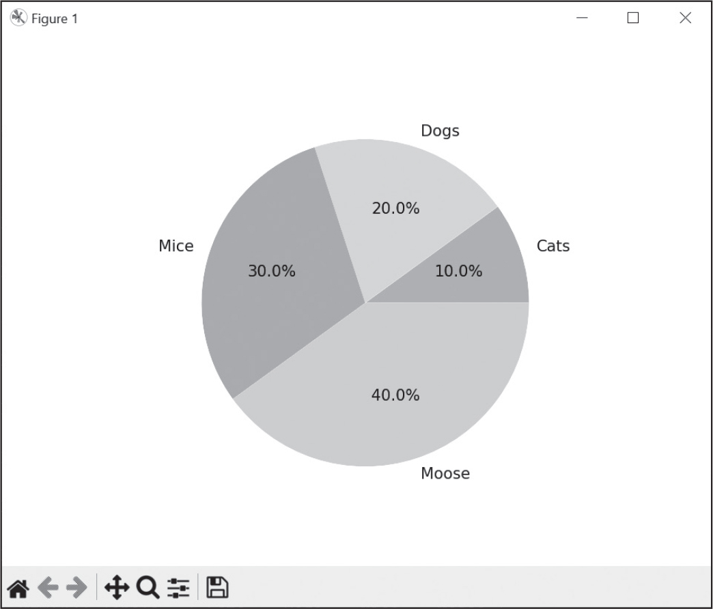
図 21-19：plt.show()で表示される円グラフ
Matplotlibは各スライスの色を自動的に選びますが、色その他の見た目はカスタマイズできます。
追加コンポーネント
これまでに作成してきたグラフはごく基本的なものです。Matplotlibにはそれだけで一冊の本が書けるくらいの非常に多くの機能があり、本書では一般的なものしか扱いません。データポイントのマーカーと色のカスタマイズとラベルをこれから説明します。以下の式を対話型シェルに入力してみてください。
>>> import matplotlib.pyplot as plt
>>> x_values = [0, 1, 2, 3, 4, 5]
>>> y_values1 = [10, 13, 15, 18, 16, 20]
>>> y_values2 = [9, 11, 18, 16, 17, 19]
❶ >>> plt.plot(x_values, y_values1, marker='o', color='b', label='Line 1')
[<matplotlib.lines.Line2D object at 0x000001BC339D2F90>]
>>> plt.plot(x_values, y_values2, marker='s', color='r', label='Line 2')
[<matplotlib.lines.Line2D object at 0x000001BC339D1A90>]
❷ >>> plt.legend()
<matplotlib.legend.Legend object at 0x000001BC20915B90>
❸ >>> plt.xlabel('X-axis Label')
Text(0.5, 0, 'X-axis Label')
>>> plt.ylabel('Y-axis Label')
Text(0, 0.5, 'Y-axis Label')
>>> plt.title('Graph Title')
Text(0.5, 1.0, 'Graph Title')
❹ >>> plt.grid(True)
>>> plt.show()
このコードを実行すると、図21-20のようなウィンドウが表示されます。最初に作成した折れ線グラフと同じデータですが、plt.plot()関数呼び出しにmarker、color、labelのキーワード引数を追加しました(❶)。マーカーは折れ線の各データポイントをドットで示します。'o'はドットをOの形の円形に、's'は四角形にします。'b'と'r'のcolor引数は折れ線をそれぞれ青（blue）と赤（red）にします。plt.legend()で作成される凡例で折れ線にラベルをつけました(❷)。
ラベルのテキストを文字列で渡してplt.xlabel()、plt.ylabel()、plt.title()を呼び出して、x軸とy軸とグラフ全体にもラベルをつけています(❸)。最後に、plt.grid()にTrueを渡して目盛りとx軸およびy軸の値を表示しています(❹)。

図 21-20：コンポーネントを追加した折れ線グラフの例
これはMatplotlibが提供している機能のほんの一例です。オンラインドキュメントでは他の機能についても説明されています。
まとめ
画像は、色を表すRGBA値と位置を示す座標を組み合わせたピクセルの集合です。画像フォーマットではJPEGとPNGが一般的です。Pillowではこれらのフォーマットとその他のフォーマットを扱えます。
プログラムが画像をロードしてImageオブジェクトを作成すると、size属性の2つの整数値のタプルから幅と高さがわかります。Imageデータ型のオブジェクトには、crop()、copy()、paste()、resize()、rotate()、transpose()の画像処理メソッドがあります。save()メソッドを呼び出せばImageオブジェクトを画像ファイルに保存できます。
プログラムで画像に描画をしたければ、ImageDrawメソッドを使います。点、直線、長方形、楕円、多角形を描画できます。書体とフォントサイズを選択してテキストを入れることもできます。
Pillowライブラリで図形の描画やピクセルの操作ができますが、グラフを作成するにはMatplotlibライブラリを使うほうが簡単です。Matplotlibのデフォルト設定で、折れ線グラフ、棒グラフ、円グラフを作成できますし、カスタマイズも可能です。show()メソッドを呼び出すとグラフをプレビュー画面に表示でき、save()メソッドを呼び出すと画像ファイルを保存できます。そうすればグラフの画像を文書やスプレッドシートに挿入できます。Matplotlibライブラリには豊富な機能があり、オンラインドキュメントで詳しく説明されています。
Photoshopのような高度な（高価な）アプリケーションには自動バッチ処理機能がありますが、Pythonのスクリプトを書くと無料で多数の同じ変更を行えます。これまでの章ではプレーンテキストファイル、スプレッドシート、PDFその他のフォーマットを扱うPythonプログラムを書いてきましたが、Pillowにより画像も扱えるようになりました。
練習問題
1. RGBA値とは何ですか？
2. Pillowモジュールから'CornflowerBlue'のRGBA値を取得してください。
3. ボックスタプルとは何ですか？
4. 例えばzophie.pngという名前の画像ファイルがあるとして、そのImageオブジェクトを返す関数は何ですか？
5. Imageオブジェクトの画像の幅と高さを取得してください。
6. 100×100の画像を4分割した左下のImageオブジェクトを取得してください。
7. Imageオブジェクトに変更を加えた後で、どのようにすれば画像ファイルに保存できますか？
8. Pillowで図形を描画するにはどのモジュールを使いますか？
9. Imageオブジェクトには描画メソッドがありません。描画メソッドがあるのはどのオブジェクトですか？ そのオブジェクトをどのように取得しますか？
10. Matplotlibで折れ線グラフ、散布図、棒グラフ、円グラフを作成する関数をそれぞれ答えてください。
11. Matplotlibのグラフを画像として保存するにはどうしますか？
12. plt.show()関数は何を行いますか？ この関数を連続して2回呼び出せないのはなぜですか？
練習プログラム
以下の練習プログラムを書いてください。
タイルメイカー
図21-6でネコの顔のタイルを示しましたが、このように一つの画像からタイル画像を生成するプログラムを書いてください。画像ファイルの名前の文字列、水平方向のタイルの枚数、垂直方向のタイルの枚数の3つの引数を取るmake_tile()関数を作成します。make_tile()関数はタイルを敷き詰めた画像のImageオブジェクトを返します。この関数ではpaste()メソッドを使用します。
例えば、 zophie_the_cat.jpgが20×50ピクセルの画像だとすると、make_tile('zophie_the_cat.jpg', 6, 10)を呼び出すと60枚のタイルが敷き詰められた120×500の画像が返されます。余裕があれば、タイル画像を作成する際にランダムに画像を反転させたり回転させたりしてみてください。このタイルメーカーは小さな画像に適しています。このコードでアブストラクトアートを作成できます。
ハードドライブ上の写真フォルダを見つけ出す
私はデジタルカメラからハードドライブ上のどのフォルダにファイルを転送したかをよく忘れてしまいます。ハードドライブ全体を走査して忘れられた写真フォルダを見つけ出すプログラムを書けるとうれしいです。
ハードドライブ上のすべてのフォルダを走査して写真フォルダを見つけ出すプログラムを書いてください。まず「写真フォルダ」とは何かを定義しなければなりません。そのフォルダ内の半分以上のファイルが写真であるフォルダだとしましょう。次に写真とは何かを定義しなければなりません。ファイル拡張子が.pngまたは.jpgで、幅と高さが両方とも500ピクセル以上の大きな画像だとします。こうしておけば安全です。というのも、ほとんどのデジタルカメラの写真は幅と高さが数千ピクセルだからです。
ヒントとして、以下にこのプログラムの骨格を示します。
# モジュールのインポートとこのプログラムの動作コメント
for folder_name, subfolders, filenames in os.walk('C:\\'):
num_photo_files = 0
num_non_photo_files = 0
for filename in filenames:
# ファイル拡張子が.pngまたは.jpgでないか確認
if TODO:
num_non_photo_files += 1
continue # 次のファイル名にスキップ
# Pillowで画像ファイルを開く
# 幅と高さが500以上か確認
if TODO:
# 写真だと考えられる大きな画像
num_photo_files += 1
else:
# 写真だと考えられない小さな画像
num_non_photo_files += 1
# 半分以上のファイルが写真なら
# そのフォルダの絶対パスを表示
if TODO:
print(TODO)
このプログラムを実行すると、写真フォルダの絶対パスが画面上に表示されます。
カスタム席札の作成
第17章の練習プログラムで、プレーンテキストファイルに書かれた招待客の一覧からカスタム招待状を作成しました。このプロジェクトの発展形として、Pillowを使って招待客のカスタム席札の画像を作成します。本書のオンライン素材のguests.txtファイルに書かれた招待客ごとに、招待客の名前を花で装飾した画像ファイルを生成します。パブリックドメインの花の画像をご利用ください。
席札がすべて同じサイズになるように、画像の端に黒い長方形を追加してください。そうすれば、画像を印刷するときに、切り取り線として活用できます。PillowのPNGファイルは1インチあたり72ピクセルに設定されているので、4×5インチのカードであれば288×360ピクセルの画像になります。